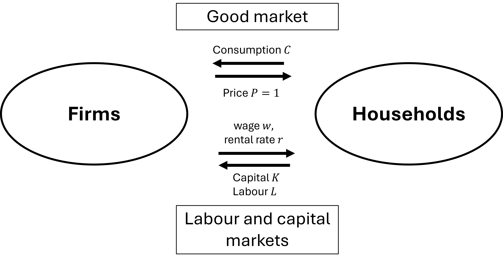
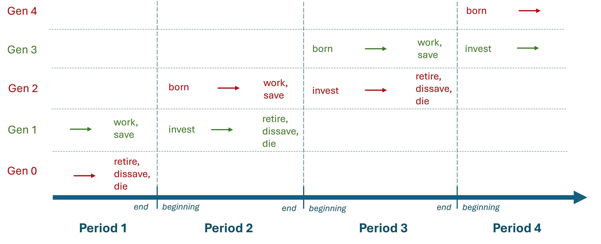
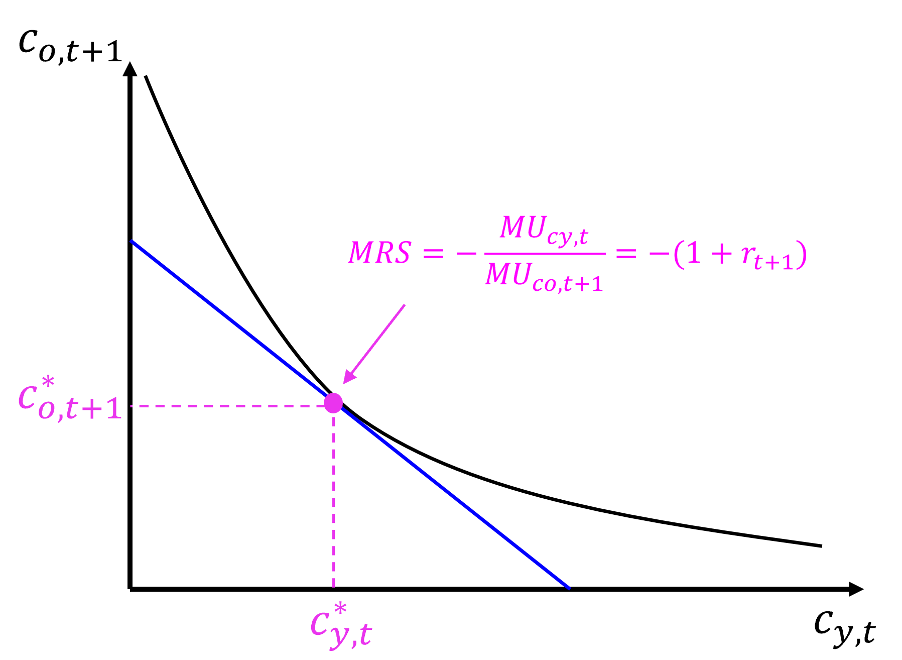
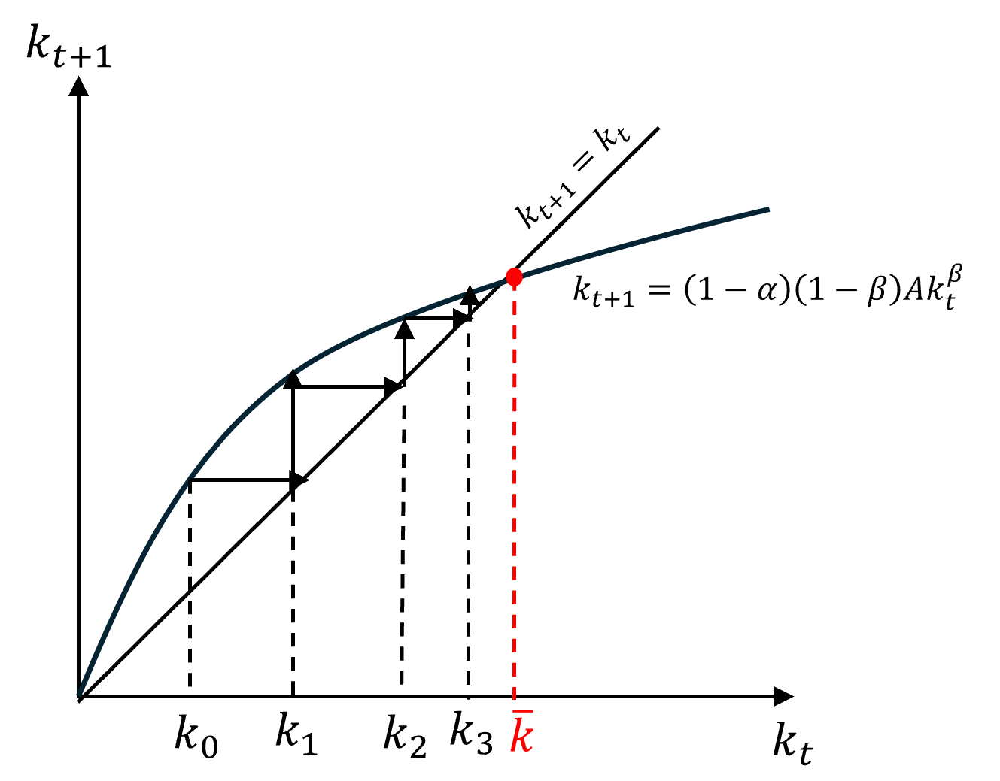
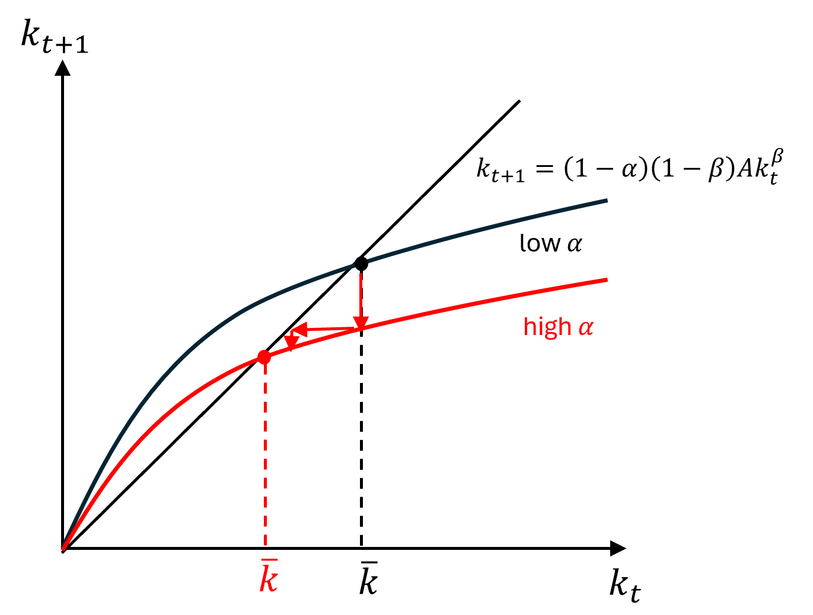
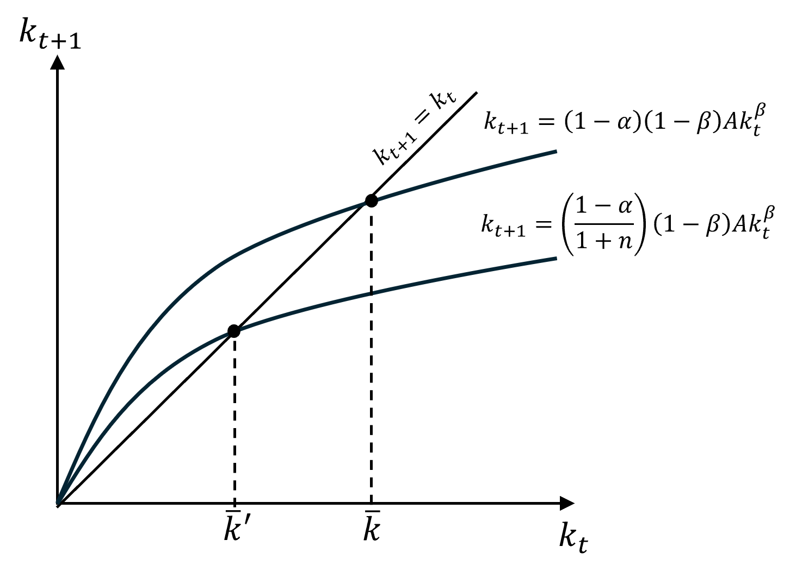
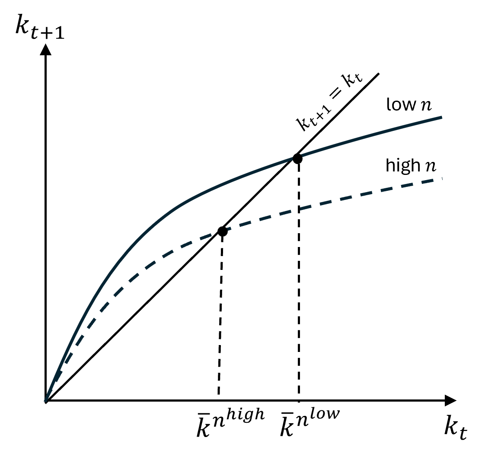
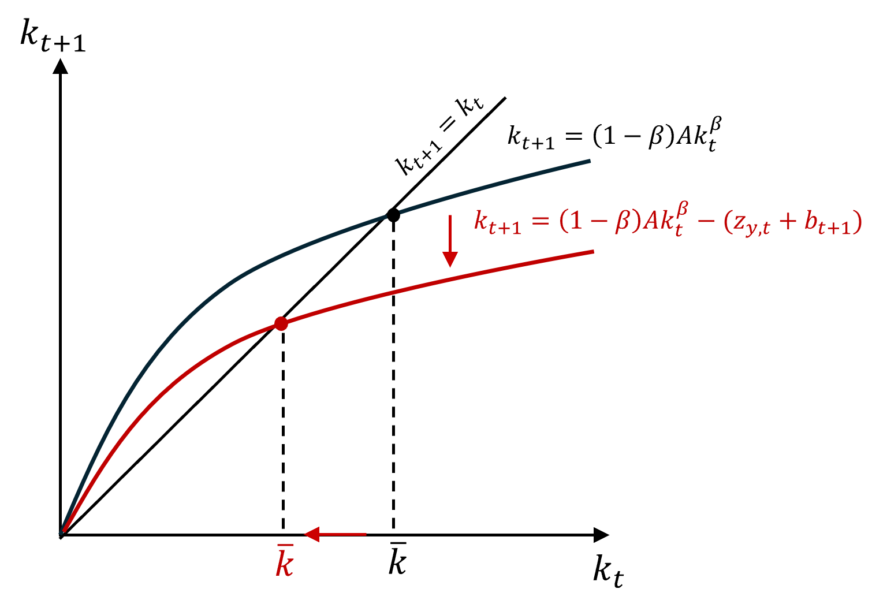
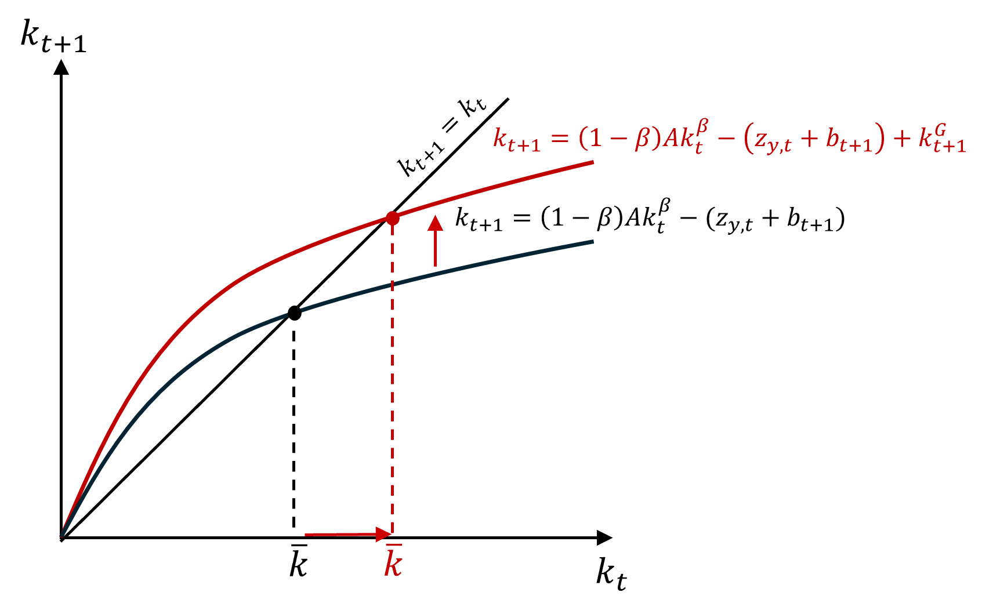

Chapter 3 The life-cycle growth model
By the end of this chapter, you should be able to:
- Describe the simple life-cycle model without population growth and technological progress: firms’ and households’ objectives, the production technology and resource constraints.
- Describe extensions of the life-cycle model with population growth and with fiscal policy.
- Understand how to solve for the equilibrium and the steady state values of the model and the differences between these two concepts.
- Analyse the effect of shocks to the exogenous parameters of the model on key endogenous variables on the steady state and along the transition path.
- Simulate the model to analyse the effect of shocks (policies, events) and evaluate the ability of the model to explain real world observations.
3.1 Introduction
The aim of this chapter is not to provide a detailed explanation of the life-cycle model, but to summarize the key elements of the model and the key steps that explain the solution of the model. A good understanding of these is required to perform model simulations. The key aim of this chapter is therefore to give you the tools to understand how model simulations work and how they can be used to analyse economic events and confront the predictions of the theory to the data.
You can find a more detailed discussion of the model in the main reference for this part of the course:
Alan J. Auerbach and Laurence J. Kotlikoff. (1998). Macroeconomics. An integrated approach, 2nd Ed., The MIT Press: Chapters 1, 2 & 3.
3.2 Model setup
3.2.1 The markets for goods, capital and labour
Assume an economy where a single output good is produced by firms. Households purchase this good in the good market and decide either to consume it or to save it, in which case it becomes instantaneously a capital/investment good. This output good is also the unit of measurement in this economy, so its price is normalised to one (\(P=1\)) and all the other prices (wage and interest rate) are expressed in units of output good.

Firms produce the output good using two factor inputs: capital and labour. The price of renting the capital stock is the interest rate (or rental rate) \(r\) and the price of hiring labour is the wage \(w\). Firms hire labour and capital from households in the market for capital and labour.
We assume that the markets for capital and labour are perfectly competitive so that both firms and households take the wage and the interest rate as given when making their labour and capital demand and supply decisions. In other words, individual firms and households do not have the power to affect these prices. Such a situation may arise because there are infinitely many firms and households competing for jobs and workers or because of free market entry.
3.2.2 Production technology
The aggregate production function is assumed to take the form of the Cobb-Douglas production function: \[ Y_t =A K_t^{\beta}L_t^{1-\beta} \quad [\text{Total output}]\] where \(Y_t\) is total output, \(K_t\) is the total capital stock, \(L\) is the total amount of labour input (number of workers or hours) \(A\) is total factor productivity (or multifactor productivity) and \(\beta\) is the elasticity of output with respect to capital (the elasticity of output with respect to labour is \(1-\beta\)).
This production function exhibits two important properties:
Property 1: Constant returns to scale: Increasing both capital and labour by the same percentage leads to an equal percentage change in output.
\[ A(\lambda K_t)^\beta(\lambda L_t)^{1-\beta}= \lambda A K_t^{\beta}L_t^{1-\beta} \]
Property 2: Diminishing returns to capital and labour: \[MPK= \frac{\partial Y}{\partial K} = \beta \left(\frac{L_t}{K_t}\right)^{1-\beta} \] The marginal product of capital is the amount by which total output increases when the capital stock increases by one marginal unit, holding constant the amount of labour input. It is decreasing with the size of the capital stock and increasing with the amount of labour input. In other words, the higher the level of the capital stock, the lower its return and the higher the labour input the higher the marginal productivity of capital.
\[MPL= \frac{\partial Y}{\partial L} = (1-\beta) \left(\frac{K_t}{L_t}\right)^{\beta} \] The marginal product of labour is the amount by which total output increases when the labour input increases by one marginal unit, holding constant the amount of capital. It is decreasing with the ampunt of labour input used and increasing with the level of the capital stock. In other words, the more labour is used in production, the lower its return and the higher the capital stock, the higher the marginal productivity of labour.
Because our focus will be on labour productivity, we will expressed the Cobb-Douglas production function in intensive form: \[ y_t =A k_t^{\beta} \quad [\text{Labour productivity}]\] where \(y = \frac{Y}{L}\) is labour productivity (output per worker/hour) and \(k= \frac{K}{L}\) is the capital-labour ratio (the amount of capital per unit of labour used).
3.3 Firms’ demand for capital and labour
In each periods, firms choose the amount of capital and labour employed that maximises their profits, taking as given \(\bar{w}_t\) and \(\bar{r}_t\) (perfectly competitive markets).
Firms’ profit maximisation problem: \[\max_{L,K} \pi = PY_t - \bar{w}_tL_t-\bar{r}_tK_t\] where \(Py=Y\) is total revenue, \(\bar{w}L\) is total labour costs and \(\bar{r}K\) is total capital costs,
Firms’ optimal demand for capital and labour satisfy the condition that marginal revenue is equal to marginal cost: \(MR = MC\)
Firms’ demand for capital: \[MPK= \frac{\partial Y}{\partial K} =\beta Ak_t^{\beta -1} = \bar{r}_t\]
Firms demand capital up to the point where the marginal product of capital is just equal to the market interest rate. Assuming the interest rate is equal to \(\bar{r}_2\), the optimal demand for capital is given by \(K_2\). To see why any other amount of capital stock would not be optimal, let’s consider two cases:
- A higher capital stock would imply a lower marginal return to capital (due to diminishing returns) than the interest rate \(\bar{r}_2\), so firms would be making a loss. Firms would be able to reduce their loss by reducing their capital stock.
- A lower capital stock would imply a higher marginal return to capital (due to diminishing returns) than the interest rate \(\bar{r}_2\), so firms would be making a positive profit. Firms would be able to increase their profit by increasing their capital stock by a marginal amount.
Firms’ demand for labour: \[MPL= \frac{\partial Y}{\partial L} = (1-\beta)A k_t^{\beta} = \bar{w}_t \]
Firms demand capital up to the point where the marginal product of labour is just equal to the market wage. Assuming the wgae is equal to \(\bar{w}_2\), the optimal demand for labour is given by \(L_2\). Following the same reasoning as for capital, it is possible to show that any other amount of labour would not be optimal.
3.4 The life-cycle model
The life-cycle model provides the micro-foundations to households’ supply of capital and labour. Households’ saving-consumption and leisure-labour supply decisions are modeled as the outcome of households’s maximising their utlity of their lifetime.
3.4.1 Setup
We assume that households live for 2 periods (about 30 years each), so at any point in time they are either “young” or “old”. Households who are young in one period become old in the second period, while a new generation of young households arrives. The diagram below shows how the generations overlap over time.

We further assume that there is no population growth, and at any point in time there are \(N\) members of the young generation and \(N\) members of the old generation.
“Young” households start life with zero assets, work full-time and earn labour income \(w\). At the end of the first period they decide how much of their income to consume, and how much to save. When they save they accumulate the assets that they will hold at the beginning of the net period.
More formally, “young” households supply labour, \(N\), earn the market wage \(\bar{w}\), consume \(c_{y,t}\) and accumulate assets \(a_{t+1}\). This gives us the total supply of labour in the economy: \[N \quad [\text{Labour supply}]\]
“Old” households do not work (they are retired). At the beginning of the period, they invest their assets in their own firms, employ young households to produce output, pay young households wage payments and keep the rest as capital income. At the end of the period they consume all their assets and capital income and end life with zero assets.
More formally, “old” households, invest their assets \(a_{t+1}\) as capital and earn capital income \(\bar{r}_{t+1}a_{t+1}\) and consume all their capital and income at the end of the period, \(c_{o,t+1}\). This gives us the total supply of capital in the economy as the sum of all the assets accumulated by the old generation at the end of the previous period: \[K_{t+1} = Na_{t+1} \quad [\text{Capital supply}]\]
3.4.2 Households’ problem
Because there is no uncertainty in the model, households decide on their consumption levels for both periods of their lives at the beginning of their lifetime. More precisely, households’ choices of how much to consume when young and when old maximise their lifetime utility subject to their intertemporal budget constraint.
3.4.3 The intertemporal budget constraint
Young households’ budget constraint: \[ c_{y,t} + a_{t+1} = w_t\] Old households’ budget constraint: \[c_{o,t+1}= (1+r_{t+1})a_{t+1} \quad [\text{Old household consumption}]\] Combining the two, we obtain the intertemporal budget constraint: \[ c_{y,t} + \frac{c_{o,t+1}}{1+r_{t+1}}= w_t \] which states that the present value of consumption when young and old (left-hand side) should be equal to the present value of lifetime income (right-hand side), where \(\frac{1}{1+r_{t+1}}\) is the price of consumption when old at the beginning of life.
The intertemporal budget constraint represents the set of combinations of consumption when young and when old that are achievable, for given \(w\) and \(r\). The diagram makes it clear that the rate at which consumption when young can be traded for consumption when old is \(1+r_{t+1}\).
3.4.4 Lifetime utility
Households preferences for consumption over their lifetime takes the form of a Cobb-Douglas utility function: \[u_t = c_{y,t}^{\alpha} c_{o,t+1}^{1-\alpha} \] where \(u_t\) is the lifetime utility of a typical member of the generation born at time \(t\) and \(0<\alpha<1\) is the key preference parameter, assumed to be constant and capturing how much households value consumption when young relative to consumption when old. Lifetime utility is also a measure of the welfare of each generation, which depends only on their consumption levels in both periods here.
Important properties of this utility function:
- Utility is increasing in both consumption when young and consumption when old.
- Diminishing marginal utility of consumption: as seen on the diagram, the marginal rate of substitution between \(c_{y,t}\) and \(c_{o,t+1}\), ie the rate at which households would be willing to substitute consumption when young for consumption when old is decreasing.
3.4.5 Optimal consumption and saving decision
Households’ optimal consumption choices satisfies: \[ MRS = -\frac{MU{cy,t}}{MU{co,t+1}} = - (1+r_{t+1}) \quad [\text{Tangency condition}]\] \[ c_{y,t} + \frac{c_{o,t+1}}{1+r_{t+1}}= w_t \quad [\text{Intertemporal budget constraint}]\]

Solving for \(c_{y,t}\) and \(a_{t+1}\) yields:
\[c_{y,t} = \alpha w_t \quad [\text{Young household consumption}]\]
\[a_{t+1}= (1- \alpha) w_t \quad [\text{Young household saving = Assets when old}]\]
3.4.6 Saving and investment
So far we have solved for the saving of “young” households separately. We turn now to the measure of national saving.
Saving of the “young” households at time \(t\): \[ S_{y,t} = Na_{t+1} \] Saving of the “old” households at time \(t\): \[ S_{o,t} = r_tNa_t - N(1+r_t)a_t = - Na_t \] where the first term (\(r_tNa_t\)) is total capital income earned by all the members of the “old” generation at time \(t\) and the second term (\(N(1+r_t)a_t\)) is the total consumption by the members of the “old” generation at time \(t\).
National saving (\(S_t\)) is equal to the sum of the saving of the young and old households at any given point in time: \[S_t = S_{y,t} + S_{o,t} = Na_{t+1} - Na_t = K_{t+1} - K_t = I_t\] where investment (\(I_t\)) is equal to the change in the capital stock between the current period and the next (\(K_{t+1} - K_t\)) assuming capital does not depreciates.
At any point in time, national investment is equal to national saving. Given that output must be equal to the sum of consumption and investment (\(Y_t=C_t+I_t\)), this is equivalent to saying that the good market is in equilibrium.
3.5 Output and price dynamics in equilibrium
Having discussed the supply and demand sides of the economy, we are now in a position to solve for the equilibrium values of the key variables of our model, labour productivity, the capital-labour ratio, the wage, the interest and consumption when young and when old.
3.5.1 Equilibrium in the market for capital and labour
Equilibrium in the labour and capital markets is achieved when demand is equal to supply.
The demand for labour is decreasing in the wage whereas the supply of labour is fixed (\(N\)) and independent of the wage. Therefore, equilibrium labour input (\(L_t\)) is equal to the fixed labour supply: \[L_t = N \quad [\text{Equilibrium labour}]\] and the equilibrium wage is equal to the marginal product of labour at this equilibrium value of labour: \[MPL= (1-\beta)A k_t^{\beta} = w_t \quad [\text{Equilibrium wage}]\] Equilibrium wage is determined by the current level of the capital-labour ratio \(k_t\) and TFP \(A\). The higher the capital-labour ratio or TFP, the more productive is an additional unit of labour input and the higher the wage.
The demand for capital is decreasing in the interest rate whereas the current supply of capital per worker is independent of the interest rate and is determined by the savings of the “old” generation in the previous period, which in turns is determined by the wage received by the old generation in the previous period: \[K_t = Na_t = N(1-\alpha)w_{t-1} \quad [\text{Equilibrium capital stock}]\] Therefore, the equilibrium capital input (\(K_t\)) is equal to its supply of capital at the beginning of the current period, and similarly for the equilibrium capital-labour ratio: \[k_t = (1-\alpha)w_{t-1} \quad [\text{Equilibrium capital-labour ratio}]\] The equilibrium interest rate is determined by the current level of the capital-labour ratio \(k_t\) and TFP \(A\). \[MPK= \beta Ak_t^{\beta -1} = r_t \quad [\text{Equilibrium interest rate}]\]
3.5.2 The transition equation
Derivation
Because output and labour productivity depend on the capital stock (\(K\)), labour (\(L\)) and total factor productivity (\(A\)) and the last two are fixed parameters, only changes in the capital stock can explain changes in growth in this model economy.
The transition equation is the key equilibrium condition of this model. The intuition for this equation is provided by the discussion in the previous section. What determines the capital stock in each period?
The capital-labour ratio at time \(t+1\) (\(k_{t+1}\)) is determined by the assets accumulated by households of the “old” generation in the previous period (\(a_{t+1}\)), which was determined by the wage they earned in the previous period (\(w_t\)), which in turn was determined by the previous period capital-labour ratio (\(k_t\)).
The transition equation makes this link between current and future capital-labour ratio appear more clearly:
\[k_{t+1} = a_{t+1} =(1-\alpha)w_t = (1-\alpha)(1-\beta)A k_t^{\beta} \]
The equilibrium value of the capital-labour ratio at any point in time \(t+1\) depends on the fixed parameters \(\alpha\), \(\beta\) and \(A\) and on its value at time \(t\). In order to solve for the equilibrium values of \(k_t\) at each point in time, \(t=0, 1, 2, 3, ...\), we also need to know its initial value \(k_0\).
The transition path diagram

The transition path diagram represents the equilibrium values of \(k_{t+1}\) for all the possible values that can be taken by \(k_t\). The straight line is a 45-degree line whereby \(k_{t+1}=k_t\).
To understand the dynamics of the equilibrium capital ratio, we can trace its time path starting with any initial value \(k_0\). The diagram represents one such time path. Starting from the initial value \(k_0\), the capital stock increases at \(t=1\) as the transition equation is above the 45-degree line. In the next period, starting with an initial value \(k_1\), the capital stock keeps increasing as the transition equation is still above the 45-degree line. This continues until the capital ratio reaches the value \(\bar{k}\), at which point it remains constant.
It is possible to show that starting at an initial value \(k_0\) above \(\bar{k}\) would lead it to converge down towards \(\bar{k}\) over time. \(\bar{k}\) is the steady state value of the capital stock. It represents the equilibrium value of the capital ratio in the long-run.
Why is the capital-labour ratio converging to a constant value? Assume for now that \(\alpha=0.5\), so that young households save half of their first period labour income (\(k_{t+1} = a_{t+1}= 0.5w_t\)). For the capital stock to increase, young households’ savings must be higher than the current capital stock (\(k_{t+1} = a_{t+1}= 0.5w_t>k_t\)). As the capital stock increases, the wage increases but by less and less with each additional increase in the capital stock (due to diminishing returns) and therefore so does the increase in the savings of the young. As the additional savings generated by an additional unit of capital falls over time, it will arrive a point where the savings of the young are just equal to the current capital stock (\(k_{t+1} = a_{t+1}= 0.5w_t=k_t\)). At this point, the saving of the young in each period is just enough to maintain the capital stock at the same level in each period. The capital stock will stabilise at this level and the economy will stop growing.
3.5.3 The full equilibrium
In the previous section, We have seen how to calculate the equilibrium values of the capital ratio as function of the exogenous parameters of the model: \(\alpha\), \(\beta\), \(A\), \(N\) and \(k_0\).
Once we have the equilibrium value of the capital ratio, it is possible to solve for the values of all the other endogenous variables of the model using the following relationships: \[y_t = Ak_t^\beta\] \[K_t = k_tN \quad \text{and} \quad Y_t = y_tN\] \[ I_t = K_{t+1}-K_t \] \[ r_t = \beta Ak_t^{\beta -1} \] \[ w_t = (1-\beta) Ak_t^{\beta} \] \[c_{y,t}= \alpha w_t \] \[a_{t+1} = (1-\alpha) w_t \]
\[c_{o,t+1}= (1 + r_{t+1}) a_{t+1} \] \[S_t = Y_t - Nc_{y,t} -Nc_{o,t} \]
3.5.4 The steady state
The steady state is defined as the long-run position towards which the economy converges, or the long run equilibrium. In this model, it corresponds to a situation in which the capital-labour ratio remains constant.
Using the transition equation and this definition, it is possible to solve for the steady state value of the capital ratio \(\bar{k}\): \[ \bar{k} = (1-\alpha)(1-\beta)A \bar{k}^{\beta}\quad \rightarrow \quad \bar{k} = [(1-\alpha)(1-\beta)A]^{\frac{1}{1-\beta}} \] Because all the other variables of the model are determined by the capital-labour ratio, they also all converge to a constant steady state value. In other words, this model cannot explain growth in the long-run.
3.6 Analysis of shocks
The exogenous parameters of the model (\(\alpha\), \(\beta\), \(A\), \(N\) and \(k_0\)) capture charateristics of the economic environment which may change as a result of shocks occurring outside of the model. For example, \(\alpha\) captures the propensity to consume when young relative to when old and affects directly the share of labour income saved by young households, and therefore capital accumulation. This parameter may change due to cultural changes in the attitude of yonger generations towards the future, policies changing the incentives to save (eg taxation of savings), …
An interesting exercise therefore is to analyse the effect of a shock to these parameters on growth (of capital, output, labour productivity, consumption) both on the short-run and long-run equilibrium values (ie the steady state) of the economy.
For example, we can ask what would be the effect of a permanent rise in \(\alpha\), ie an increase in young households’ propensity to consume, and therefore a fall in their saving on labour productivity growth in the long-run and the short-run. The diagram below shows how the transition path schedule would shift down on impact as for a given level of the capital ratio and income per worker the level of saving falls, leading to an immediate fall in the capital stock on the next period. The economy would then converge to a lower steady state value of the capital-labour ratio.

The model therefore predicts that a rise in \(\alpha\) would lead to a fall in the labour productivity growth rate in the short-run, but not in the long-run as the capital ratio stabilises at a new steady state level eventually. However, the shock would have a permanent negative effect on the level of the capital-labour ratio and therefore on the level of productivity growth since \(y_t\downarrow = A(k_t\downarrow)^\beta\).
3.7 The life-cycle growth model with population growth
So far we have assumed no population growth. To capture the fact that the population may be growing over time and analyse the effects of changes in the population growth rate on the equilibrium values of the variables in the model, we now assume that population is growing as follows: \[ N_{y,t+1} = (1+n)N_{y,t}= (1+n)N_{o,t+1} \] where \(N_{y,t+1}\) is the number of households in the young generation at time \(t+1\), \(N_{y,t}\) is the number of households in the young generation at time \(t\), which is the same as the number of households in the old generation at time \(t+1\), \(N_{o,t+1}\), and \(n\) is the constant exogenous growth rate of the population.
Since the capital-labour ratio \(k_t\) represents the amount of capital per worker, it is now defined as the amount of capital per member of the young generation: \[k_t=\frac{K_t}{N_{y,t}}\]
and since labour productivity \(y_t\) represents the amount produced per worker it is now defined as the amount of output produced per member of the young generation: \[y_t=\frac{Y_t}{N_{y,t}}\]
Transition equation
The equilibrium in the capital market states that the capital stock in the next period is equal to the assets accumulated by the current old generation in the previous period: \[K_{t+1}= N_{o,t+1}a_{t+1} \] Since everything else remains the same, assets at time \(t+1\) are still equal to \(a_{t+1}=(1-\alpha) w_t\) and \(w_t= (1-\beta) Ak_t^{\beta}\), we can derive the transition equation as follows: \[ k_{t+1} = \frac{K_{t+1}}{N_{y,t+1}} =\frac{N_{o,t+1}a_{t+1}}{N_{y,t+1}}= \frac{a_{t+1}}{1+n} = \frac{1-\alpha}{1+n}w_{t} = \frac{1-\alpha}{1+n}(1-\beta) Ak_t^{\beta}\]
Transition path diagram
The transition path diagram below conserves the same concave due to diminishing returns to capital. Along the equilibrium path, the economy will therefore still converge to a steady state where the capital-labour ratio is constant.

Along the equilibrium path, the economy will therefore still converge to a steady state where the capital-labour ratio is constant. However now, the steady state capital-labour ratio is lower as the assets accumulated by the old generation in the previous period is now spread out over a higher number of households of the young generation in the current period. This means that more savings in the previous period will be required to maintain the same level of the capital-labour ratio.
One can now ask what happens to the growth rate of the capital-labour ratio in the short-run when the population growth rate \(n\) changes.

A rise in the population growth rate rotates the transition curve down. Since the initial steady state level of capital was just sufficient to generate savings required to maintain it at the same level, it is not enough to accommodate larger arrivals of young workers in the labour market. As a result, the capital-labour ratio falls in the short-run, before stabilising at a new lower steady state level in the long-run.
The steady state in the model with population growth
In the model with population growth, the equilibrium values of the variables of the model converge to different steady state growth rates.
First, labour productivity \(y\), the wage \(w\), the interest rate \(r\) and all the other per worker variables such as consumption \(c_y\) and \(c_o\) and savings \(a\) are functions of the capital-labour ratio \(k\). Since the steady state value of the capital-labour ratio is constant, they also converge to a constant steady state value. In other words, as in the model without population growth, this model still cannot explain long-run growth in labour productivity and living standards.
Second, output \(Y\), the capital stock \(K\) and consumption grow at the constant population growth rate \(n\). Using the definition of the capital-labour ratio, we know that \(\bar{k}=\frac{K_t}{N_{y,t}}\) in the steady state. Since \(\bar{k}\) is constant and \(N_{y,t}\) grows at the rate \(n\), it must be that \(\bar{K}_t\) is also growing at the rate \(n\) in the steady state. The same reasoning follows output. This model predicts that in an economy with no labour productivity growth, output would be growing at a constant rate in the long-run, equal to the population growth rate.
3.8 The life-cycle growth model with fiscal policy
3.8.1 The government intertemporal budget constraint
The government intertemporal budget constraint (GIBC) can be written as follows:
\[ \underbrace{B_t + \frac{G_t}{R_t} + \frac{G_{t+1}}{R_tR_{t+1}}+\frac{G_{t+2}}{R_tR_{t+1}R_{t+2}} + ...}_{\text{Current debt + Present value of government purchases}}= \underbrace{\frac{Z_t }{R_t} + \frac{Z_{t+1}}{R_tR_{t+1}}+\frac{Z_{t+2}}{R_tR_{t+1}R_{t+2}} + ...}_{\text{Present value of net tax payments}} \]
where \(B_t\) is the current debt (the stock of government bonds), \(G_t\) is government spending (consumption), \(Z_t\) is net tax payments (the difference between the amount received by the government in tax revenues and transfers to households) and \(R_{t+s} = 1+r_{t+s}\) is the period \(s\) discount factor.
The GIBC states that the sum of the current debt and the present value of future government spending (consumption) must be equal to the present value of future net tax payments. The implication for the conduct of fiscal policy in our model is that any increase in government spending \(G_t\) at time \(t\) must be financed either by an increase in net tax payments (a rise in tax revenues or a fall in transfers) \(Z_t\) at time \(t\) or by a rise in net tax payment in the future \(Z_{t+s}\) (\(t=1, 2, 3, ...\)).
3.8.2 Fiscal policy
In this section, we assume no population growth, so there are the same number of households in each generation (\(N\)).
Assume the government wants to finance government spending \(\bar{G}\) at time \(t\) and all following periods. Furthermore, this additional government consumption is fully consumed during the period, ie it has no impact on the economy’s capital stock or productivity in the subsequent periods.
Because the GIBC must hold at all times, such an expenditure can be financed at time \(t\) either by taxation or by running a budget deficit (borrowing) which must be repaid by higher taxes in the future.
Taxation (only)
Assume current government purchases are financed in full by higher taxation in the current period.
Net tax payments can either fall on young households or on old households as follows:
\[ Z_t = Nz_{y,t} + Nz_{o,t} \]
where \(z_{y,t}\) is net tax payments by young households and \(z_{o,t}\) is net tax payments by old households.
We will only consider the two extreme cases where all the tax burden falls on the young or on the old households:
- The burden of taxation falls entirely on old households: \[Z_t=Nz_{o,t}=N\bar{g}=\bar{G}\] Each household of the old generation pays an equal share \(\bar{g}\). The present value of taxation for households under such a scheme is equal to:
\[\hat{z}= \frac{z_{o,t+1}}{1+r_{t+1}}=\frac{\bar{g}}{1+r_{t+1}}\]
- The burden of taxation falls entirely on young households: \[Z_t=Nz_{y,t}=N\bar{g}=\bar{G}\] Each household of the old generation pays an equal share \(\bar{g}\). The present value of taxation for households under such a scheme is equal to: \[\hat{z}= z_{y,t}=\bar{g}\] The tax burden is higher under the second scheme because households forego the interest rate they would have earned on their first period income by paying taxes.
Deficit finance
Assume current government purchases are financed in full by a budget deficit (higher borrowing) in the current period, which is fully repaid by higher taxation in the next period.
\[G_t = B_{t+1} = Nb_{t+1}\]
At \(t\): the government sells bonds \(b_{t+1}\) to “young” households. Young households purchase bonds at the beginning of period \(t+1\) with the savings they would have used to purchase capital assets.
At \(t+1\): the government repays the amount borrowed from old households with interest \((1+r_{t+1})b_{t+1}\) and simultaneously taxes them to raise the funds \(z_{o,t+1} = (1+r_{t+1})b_{t+1}\) needed to pay these interest repayments. Deficit finance is deferred taxation.
This gives the third method to finance government spending \(\bar{G}\) at time \(t\):
- Deficit finance (borrowing): \[\bar{G} = B_{t+1} = Nb_{t+1}=N\bar{g}\] Each household of the old generation purchase an equal share \(\bar{g}\) of the debt at the beginning of period \(t+1\) with their previous period saving, are repaid with interest at the end of the period and pay the same amount in tax. The present value of taxation for households under such a scheme is equal to: \[\hat{z}= \frac{z_{o,t+1}}{1+r_{t+1}}=\frac{(1+r_{t+1})b_{t+1}}{1+r_{t+1}}=\bar{g}\] Households’ tax burden over their lifetime in this third scheme is the same as under the second scheme. If households can fully anticipate that budget deficits today leads to higher taxation in the future, they should realise that financing higher government spending with higher debt is equivalent to being taxed more when young.
3.8.3 Equilibrium
Fiscal policy only changes the consumption-saving decision of households, so we focus on the equilibrium conditions associated with households’ decisions.
To simplify the exposition further, we will assume that households do not care about consumption when young (\(\alpha=0\)). Although not a realistic assumption, this is not a crucial assumption to analyse the role of taxation on capital accumulation.
Young household consumption: \[c_{y,t} = \alpha w_t = 0\] Capital assets accumulated by young households (= Saving - bonds purchased): \[a_{t+1} = (1-\alpha)w_t - \ z_{y,t} -b_{t+1}=w_t - (\ z_{y,t} +b_{t+1})\] Old household consumption (= Income earned from capital assets and bonds minus taxation): \[c_{o,t+1}= (1 + r_{t+1}) a_{t+1} + (1+r_{t+1})b_{t+1} - z_{o,t+1}\] Transition equation: \[ k_{t+1} = a_{t+1} = w_t - (\ z_{y,t} +b_{t+1}) =(1-\beta) A k_t^{\beta} - ( z_{y,t} +b_{t+1} )\]
The equations for \(Y_t\), \(L_t\), \(K_t\), \(y_t\), \(r_t\), \(S_t\) and \(I_t\) describing how the endogenous variables of the model behave in equilibrium remain the same as before.
The equilibrium now includes two new exogenous fiscal policy variables (\(z_{y,t}\), \(z_{o,t+1}\) or \(b_{t+1}\)) in addition the exogenous parameters (\(\beta\), \(A\), \(N\) and \(k_0\)).
3.8.4 Transition Diagram, steady state and fiscal policy shocks

The transition diagram conserves the same concave shape as in the model without fiscal policy due to diminishing returns to capital. However an increase in taxes on young households (the savers) or in the budget deficit rotates the transition path diagram clockwise. The steady state capital-labour ratio is now lower. In the absence of fiscal policy (\(z_{y,t}=z_{o,t}=b_{t+1}=0\)), savings would be fully invested in capital assets and contribute to the capital stock in the next period.
With fiscal policy (\(z_{y,t}+b_{t+1}>0\)), savings are reduced by the amount that needs to be paid in tax (\(z_{y,t}\)) and are used in part to purchase government debt \(b_{t+1}\). A the initial steady state level of the capital-labour ratio, the same wage leads to lower investment in capital assets and therefore a lower capital stock in the next period. This means that a higher wage in the previous period would be required to maintain the same level of the capital-labour ratio, which has become unsustainable. As a result, the economy converges to a lower steady state level of the capital-labour ratio and labour productivity.
A fiscal policy shock affects capital accumulation and growth when the sum of taxation of the young and debt (\(z_{y,t}+b_{t+1}\)) changes. A rise in either of these policies, holding everything else constant will lead the capital-labour ratio and labour productivity (and their growth) to fall for some time before stabilising permanently at a lower level.
3.8.5 Government investment
So far we have assumed that government spending is fully consumed within the period. However, the government does invest in infrastructure projects, buildings, research, …, which adds to the capital stock.
Transition equation
To capture this fact, the capital stock at time \(t+1\) can be rewritten as: \[K_{t+1} = Na_{t+1} + K_{t+1}^G\] where \(Na_{t+1}\) is the privately-owned capital stock and \(K_{t+1}^G\) is government capital assets.
Expressed per unit of labour, this gives the following revised transition equation: \[ k_{t+1} = a_{t+1} + k_{t+1}^G = w_t - (z_{y,t} +b_{t+1}) + k_{t+1}^G =(1-\beta) A k_t^{\beta} - (z_{y,t} +b_{t+1}) + k_{t+1}^G\] where \(k_{t+1}^G\) represents an additional channel through which government policy affects capital accumulation and growth.
Transition path diagram
To see the effect of government capital investment on growth and living standards in the long-run, we now turn to the transition diagram.

For given initial levels of the capital labour ratio, taxation and debt, a rise in government investment (relative to pure government consumption or transfer) raises the capital labour ratio in the next period. This leads to a rise in labour productivity, the wage and savings, which raises further the capital stock.In the short-run, a rise in government spending on capital assets therefore raises growth. In the long-run, the economy converges to a new higher steady state level of the capital stock.
Ultimately, government investment needs to be financed, leading to two possible cases:
- If \(k^G_{t+1}\) is financed by taxing the young or by borrowing (\(z_{y,t} +b_{t+1}\uparrow\)) then the net effect on capital accumulation is null: government investment replaces private investment.
- If \(k^G_{t+1}\) is financed by taxing the old then the net effect on capital accumulation is positive.